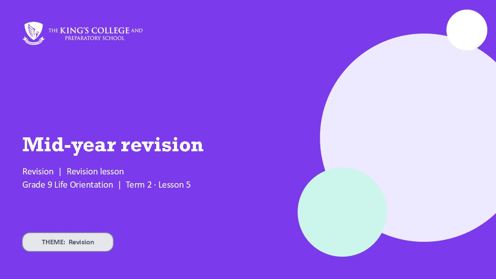

Term 2 · Lesson 5 · Revision lesson: practice paper
Mid-year revision
Start here
Today I will
- Practise a mid-year paper on Terms 1 and 2 under time
- Write a full Section C paragraph
- Mark my paper and plan my exam studying
The mid-year exam covers Terms 1 and 2. Which topic do you feel MOST ready for, and which LEAST?
Words to know
- Section A
- Short questions: multiple choice, terms, true/false.
- Section B
- Questions about a scenario or source.
- Section C
- A paragraph answer: choose ONE of two questions.
- Mark allocation
- The numbers in brackets that show how many points to give.
Slides

Notes
Exam tips
- Read first: Read the instructions and all the questions.
- Plan time: About 1 minute per mark.
- Build answers: Statement, reason, qualifier, outcome.
- Use the source: Names and details from the scenario earn marks.
Task 3: peace, faith and sport ethics
- What: A podcast video + Google Doc (30 marks + 5 for creativity) on how faith contributes to peace, and on ethics in sport.
- When: Due Friday of Term 3, Week 3.
- Help: Term 3, Lesson 1 covers the content you need.
- Start now: Read the brief and rubric on Google Classroom and write down your questions.
Read, plan, build, check. Study your weakest topic first.
Written practice
SECTION A (8 marks)
- A1Choose the correct answer. Write only the letter.
(a) Which Chapter 9 institution investigates complaints when government officials abuse their power? A Electoral Commission B Public Protector C Auditor-General D Commission for Gender Equality
(b) Sadness and loss of interest that last two weeks or more and affect daily life may be a sign of… A stress B grief C depression D crisis
(c) Which of these is a SMART goal? A 'I want to be fitter.' B 'I will study more.' C 'I will run 3 km three times a week until the 5 km fun run on 30 May.' D 'I want good marks.'(3 x 1) (3) - A2Give ONE word or term for each description.
(a) The supreme law of South Africa.
(b) Negative labels or shame attached to something, such as mental illness.
(c) A free, clear yes given without pressure, which can be withdrawn at any time.(3 x 1) (3) - A3True or false: 'A person with depression can just snap out of it if they try harder.' If false, correct the statement.(1 x 2) (2)
SECTION B (9 marks)
Thabo played in the school rugby team in Grade 8. When King's moved from rugby to basketball, he felt as if he had lost part of who he was. For weeks he skipped practice and told his friends 'Sport is pointless now.' Coach Ricardo invited him to help the Grade 7 boys with fitness drills, and Mr Ncube asked him after class how he was doing. Slowly, Thabo began to enjoy the new game. He now says Coach Ricardo is his role model because 'he treats every player with respect, whether they win or lose'.
- B1Identify TWO things Thabo lost when the school changed sports.(2 x 1) (2)
- B2Explain why Thabo's reaction ('Sport is pointless now') is a normal part of grief.(1 x 2) (2)
- B3Name the constitutional value Coach Ricardo shows and explain how he lives it out.(1 + 1) (2)
- B4Assess how the support of positive role models helped Thabo cope with this change.(1 x 3) (3)
SECTION C (8 marks): answer ONE question
- C1Analyse TWO ways in which stigma can stop teenagers from getting help for mental health problems.(2 x 4) (8)
- C2OR: Analyse TWO ways in which knowing BOTH your rights and your responsibilities can help to build a safer, more respectful school.(2 x 4) (8)
Finished early?
Use an exam practice set to strengthen the Term 1 or Term 2 topic you feel least ready for.
- Write down your weakest topic from Terms 1 and 2.
- Find the matching set at the back of your Activity Book: Term 1 Set A, B or C, or Term 2 Set A, B or C.
- Answer two questions, OR plan a Section C answer: jot down three different points for 'Analyse how stigma can prevent teenagers from getting help.'
- Mark yourself with the memo on Google Classroom and note the Handbook pages to reread.